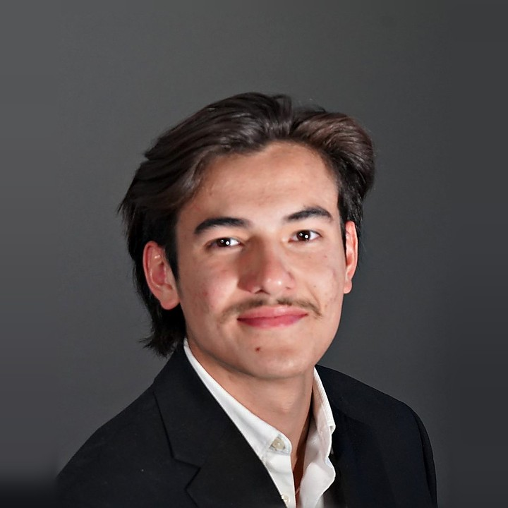

Raphaël Lansonneur, 雷赫非
MSc Global Health Management, Imperial College LondonBA Biology and Economics, Brown University
I’m completing an MSc in Global Health Management at Imperial College London, after a BA in Biology and Economics at Brown University. I also run a videography and digital marketing agency based in Geneva, and previously sold to CFOs at Gartner.
Seven cities so far
Singapore
2005–2021
Where I grew up. International Baccalaureate at UWCSEA Dover, 40/45, with Higher Level Chemistry, Biology and Psychology.
Providence
2021–2025
BA Biology and Economics at Brown University, GPA 3.75/4.00. Co-captained the Brown Men’s Rugby Team to the 2024 D1 National Championship.
Bogotá
2024
Six weeks in business development with TourHero, before the second half of the internship in New York.
New York
2022 and 2024
Summer internships in branding at ESTABLISHED. and in business development at TourHero.
Geneva
2023–now
Co-founded Ink Studio, a videography and digital marketing agency.
Barcelona
2026
Sales development at Gartner, prospecting CFOs of midsize enterprises.
London
2026–2027
MSc Global Health Management at Imperial Business School.
Experience
Select a role for details
-
Videography and digital marketing agency. inkstudio.ch
- Brand films, event videos, social content and ads for 10+ clients in hospitality, education, sports, real estate and fashion.
- Run the business side: sales, client relationships, operations, finance and infrastructure.
- Designed and built the agency’s website.
- CHF 35,000 in revenue in 2026 so far.
-
Research and advisory firm. MSE Finance team.
- First point of contact for CFOs of midsize enterprises ($100M–$1B revenue), through cold calls, email sequences and LinkedIn.
- Turned prospects into 45-minute introductory meetings on Gartner’s services.
- Consistently hit 125–150% of monthly targets, among the top performers on the team.
-
Travel tech startup. Six weeks in Bogotá, Colombia, then six weeks in New York.
- Onboarded 30+ venues in Bali by negotiating with villa owners and management companies.
- Brought on new clients and ran market research and marketing initiatives to raise brand visibility.
-
Hospitality agency.
- Covered front-of-house roles across venues at short notice, keeping service standards high under pressure.
-
Packaging and branding agency.
- Proposed branding and marketing ideas with the strategy team, backed by research into trends and artists.
Education
Select a school for details
-
Imperial Business School. Concentration in Innovation & Entrepreneurship.
- Health Economics; Health Systems, Policy and Financing; Business Strategy for Global Healthcare.
- Design Thinking; Marketing for Entrepreneurship; Technology and Innovation Management; Financial Accounting for Health.
-
Brown University. GPA 3.75/4.00.
- Immunology, infectious diseases, genetics, organic chemistry, and cell and molecular biology.
- Microeconomics, international finance, and the management of industrial and nonprofit organisations.
- Co-captain of the men’s rugby 1st XV: 2024 D1 National Champions, 2022 D1 National and Ivy League Champions. Scholastic All-American.
-
United World College of South East Asia, Dover campus.
- 40/45, with Higher Level Biology, Chemistry and Psychology.
- Volunteered with Mercu Buddies, running activity sessions for underprivileged children.
- Volunteered at MINDSville, a Singapore non-profit serving people aged six and above with intellectual and developmental disabilities.
About

With a background in Biology and Economics, I’m drawn to the intersection of science and business, where research becomes real-world impact. Building Ink Studio has also drawn me to the creative industries, and to the importance of storytelling in conveying ideas and messages.
I co-founded my first company in my final semester at Brown, co-captained a D1 national championship rugby team, and learned to sell at Gartner. Outside of work, I’m passionate about film and the culinary arts. I train Muay Thai, snowboard and surf, and play piano and chess.
- Languages
- French Native
- English Native
- Mandarin Fluent
- Spanish Basic
- Tools
- Web design, Claude Code, Excel, PowerPoint, Word, Google Workspace, Salesforce